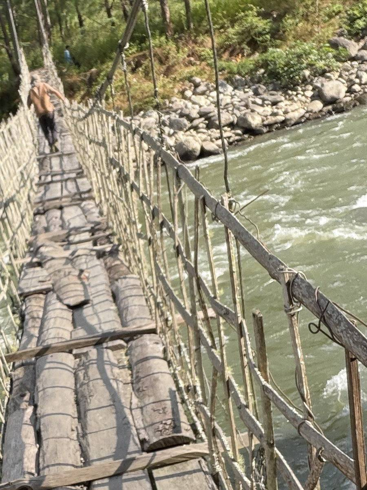

The walk to Lichini.
Start at [the Bichom view point or the homestay]. Walk to Lichini village, crossing [number] footbridges on the way.
The walk goes from Bichom to Lichini village, on foot.
It takes [hours] each way and is [easy / steady / steep].
On the way you will pass:
- [first thing, one sentence]
- [second thing, one sentence]
- [third thing, one sentence]
In Lichini, [who you will meet and what happens: tea, a meal, a talk].
Bring water, shoes with grip, a rain jacket and cash. [Where does the phone signal stop?]